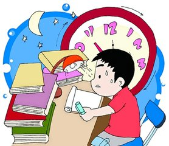
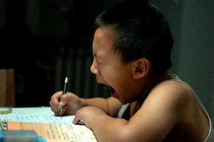
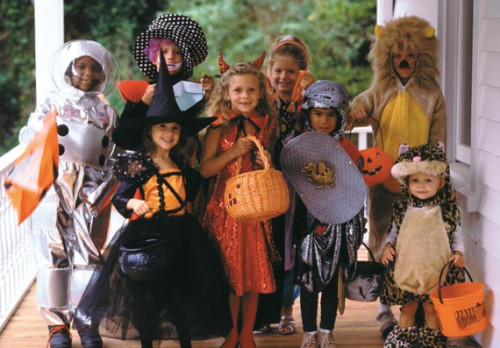
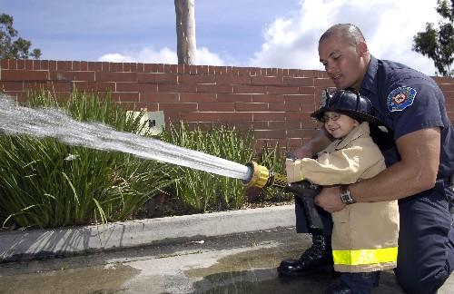
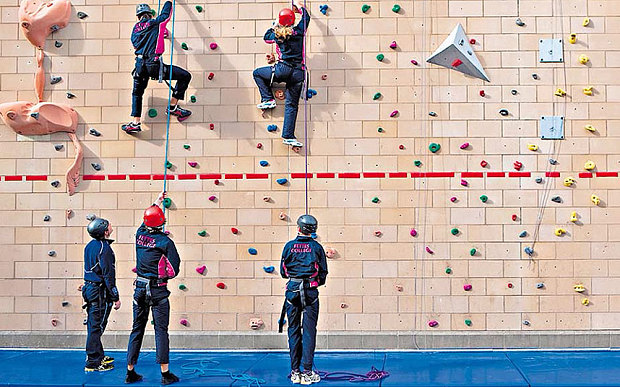
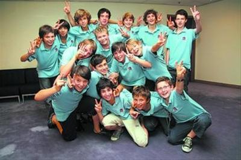

互惠动态
|
|
互惠生惊呆了：十岁的中国弟弟每天做作业到晚上十点？
“我的中国弟弟刚满十周岁，读小学四年级，为什么每天作业都那么多？甚至做到晚上十点左右，不做完不能去睡觉，我看他明明都已经很困了，why?”“it's impossible for us！”在与互惠生聊天的过程中，他们都有这样的疑惑，为何中国孩子家庭作业会那么多？他们的正常休息时间能得到保障吗？


课外作业偏大的主要国家有中国、新加坡、伊朗、菲律宾、日本。这些国家小学生作业时间更长，每天作业量在1小时以上。
与上述情况相反，在美国、英国、西班牙、土耳其、法国等欧美国家，小学生平均每天作业时间量在1个小时以下。他们的课余时间更多的是参加活动，培养孩子各方面的兴趣，激发更大的潜能。

参加社区活动
美国学生的课余社区活动非常丰富，包括参观银行和警察局、学做面包、到医院去照料病人、到湖边去清理垃圾且自己承包一段湖堤等。做义工是美国社会的良好传统风气，几乎所有的中学生都到社会上各种义工组织服务，像医院、图书馆、童子军、红十字会以及许多公司都积极组织和提供各种义工机会。在活动中，孩子们既接触到了社会、奉献了爱心，同时交到了许多朋友。据统计，美国12岁以上的青少年有60%以上的人参加过各种义务服务活动，如在当地的流浪者收留中心为无家可归的人做饭等。
除了做义工，美国的学生利用课余时间去打工已成为风潮。联邦政府还专门为青少年打工立法，以保护孩子们的权利。良好的政策环境，保证了美国的青少年顺利地工作。特别是每年5月，美国各地就开始举办“少年工作交易会”，暑假需要少年打工的许多单位都拟订了计划，陆续与学生们订立打工合同。

法国法律是不允许没有生活自理能力的孩子独自呆在家中的。为了解决双职工家长的“后顾之忧”，巴黎市政府规定，城内每个小区都选出一所小学设立“娱乐中心”，费用由国家教育部和巴黎市政府共同支付。“娱乐中心”的活动由辖区内各中小学的教师轮流主持，家长只需把孩子送到中心就可以了。在法国，委托娱乐中心照管的孩子很多，在中心里孩子们都能够愉快地和小朋友共度课余时光。
法国从小学到初中学生，几乎没有家庭作业。课余时间，许多学生去图书馆、博物馆、科技馆参观学习，增长知识。法国的公立图书馆系统完备，巴黎的各类博物馆更是多如牛毛。18岁以下的人可以在这些场馆免费自由出入，法国各城市图书馆的借书证全市通用。由于免费，公共的图书馆、博物馆就成了学生们学习、交友的“营地”。

课外活动显然已经不再是简单的教学任务，其已演变成学生必备特长之一。英国相关机构负责人表示，“英国学校不能只是考试工厂”，寓教于乐的户外活动对培养孩子的自信心与耐心是绝对有帮助的。坎布里亚赛博格(Sedberg)学校校长Andrew Fleck表示，“教育应该是培养一个学生的完整人格，孩子们在学校参加的课外活动是会为其带来一生的积极影响的，对他们之后的人生都会提供正确的指引方向。”
据英国媒体报道，现在英国学校的课外活动已经不再是单纯的课外游戏或者体育项目，项目多样已经发展到行业的各个方面，更有比如寿司制作的教学等等。而私立学校还善于推出各种商业实习项目以帮助学生尽早了解熟悉商业运作流程，并鼓励10岁以上的孩子在学校学习期间创办自己的企业，学生们从中学习到的不只是枯燥的理论知识，而是通过自己的实践真正了解如何经营一家公司，如何售卖产品及推广。


关于互惠，您了解得够多么？
请外国学生来家庭照顾孩子，辅导孩子外语？
只了解这些是不够的！
获取更多信息请参考以下方式：
联系ASC：
电话：86-21-61116069(上海中心）
86-25-66065662（南京中心）
手机：15601666586（可加微信）
Q Q：3259637585
微信：asc-center
邮箱：info@asc-center.com
网站：www.asc-aupair.com

感谢您对我们的关注